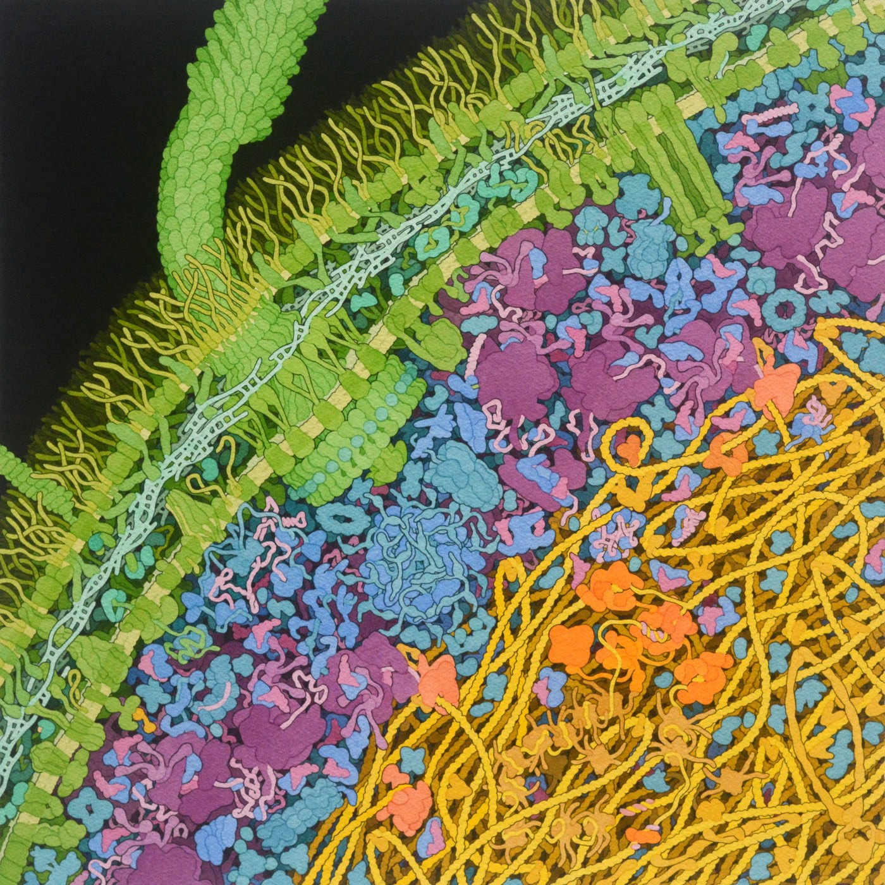
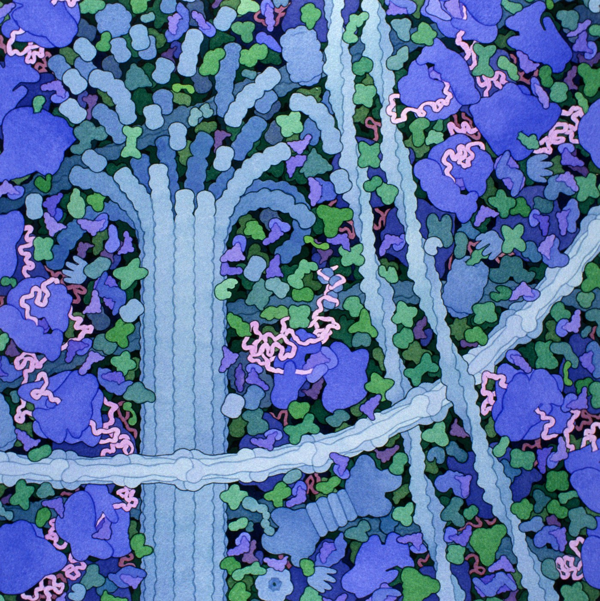

1.2 What Is Alive, and How Is It Built?
Chapter 1.1 took you inside one membrane. This chapter zooms all the way out — and then asks the question that ought to have come first: what exactly was it that the membrane was keeping alive?
In 1.1 you saw a membrane hold a boundary: heads towards the water, tails away from it, an oily core in the middle that oxygen crosses freely and sodium cannot cross at all. You also ran a cell in the osmosis simulation and watched it settle at a size where water crossed equally in both directions.
That simulation was the first model in this course, and it is worth noticing what it was not. It was not a cell. It had ninety water particles instead of about ten billion trillion, it was flat, and the membrane was a drawn circle. It was still useful — because a model does not have to be accurate to be useful. It has to be accurate about the thing you are using it for. That distinction is what the second half of this chapter is about.
By the end of this chapter you should be able to
- List the characteristics shared by all living things, and apply them to a case that is genuinely hard to classify.
- Put the levels of organisation in order from atom to biosphere, and give a real example at each level.
- Explain what an emergent property is, and why it means a body is more than a list of its parts.
- Say what a model is for, judge how good a particular model is, and name a place where it stops being true.
What makes something alive
This looks like an easy question until you try to answer it precisely. A candle flame consumes fuel, gives off heat, grows, moves, responds to a draught, and can even reproduce — light one candle from another and now there are two flames. Every one of those is something living things do. Yet nobody thinks a flame is alive.
So biologists do not define life with a single property. They use a list, and the rule is that a living thing has to show all of them. Miss one and you are out.
| Characteristic | What it means | What it looks like in you |
|---|---|---|
| Order | Built of one or more cells, arranged in a highly organised structure | Every part of you is made of cells, and no part of you is a random pile |
| Energy processing | Takes in energy and uses it to run chemical reactions — metabolism | You eat, and use the energy to build, move, think and stay warm |
| Growth and development | Gets larger and changes form according to instructions it carries | You were 3 kg once and the instructions for the rest were already inside you |
| Response to the environment | Detects changes outside itself and does something about them | You pull your hand off a hot pan before you have thought about it |
| Regulation | Keeps its internal conditions steady — homeostasis | Your core temperature stays near 37 °C in a Hong Kong summer and a cold classroom |
| Reproduction | Produces new individuals of the same kind | Every cell in you can, in principle, divide and make more of itself |
| Adaptation over time | Populations change across generations to suit their surroundings | Not something you do — something your species does, over thousands of years |
Now run the flame through the list. It processes energy, grows, moves and responds — four out of seven. But it is not made of cells, it does not regulate itself (it burns hotter in a draught rather than correcting), and it does not carry heritable instructions that change over generations. It fails three, so it is not alive.
The list is more interesting when the case is genuinely hard. Below are three of them.
"Movement" is not on the list, and this catches people out. An oak tree is alive and does not move; a river moves and is not. What matters is not whether something moves but whether it responds — whether the movement is a reaction to something detected.
The dry acorn is the most useful case on that chart. Sitting in a drawer it is doing almost nothing measurable — no visible metabolism, no growth, no response. It is still alive, because the machinery is intact and paused rather than destroyed. Add water and it restarts. That tells you the definition of life is about capability, not about what a thing happens to be doing at the moment you look at it.
From atom to biosphere
Every living thing is built the same way: small parts assembled into larger parts, over and over, with each level made entirely out of the level below it. Biologists call this the hierarchy of organisation, and once you can see it you can locate almost any biological question at a level.


Why the levels exist at all
Here is the point that makes the ladder worth learning rather than just memorising. At each level, the assembled thing can do something that none of its parts can do on their own. That is called an emergent property.
- Two hydrogen atoms and an oxygen atom are gases. Bond them and you get water — a liquid that dissolves things, moderates temperature and climbs up a tree. Nothing about hydrogen predicts that.
- One intestinal cell can absorb glucose. It cannot absorb a meal. A sheet of them, folded, joined edge to edge and served by capillaries, can absorb a meal.
- A stomach can churn and acidify. It cannot feed you. It needs a mouth in front of it and an intestine behind it.
This is why "the body is the sum of its parts" is wrong, and why HS-LS1-2 asks you to build a model of interacting systems rather than a labelled diagram. A list of components tells you nothing about what the assembly can do. The arrangement is the point.
Build the ladder yourself now. Order the levels first, then put a real body on them — and then, in the last stage, find the places where the ladder stops being true.
Build the hierarchy, then break it
Interactive- Do the ordering stage without scrolling back to Figure 1.4. Getting it wrong and reading the reason is worth far more than copying it correctly.
- In the second stage, try the oak tree after the human. If the model is any good it should survive the change of organism entirely. Does it?
- In the third stage, three of the five claims break the model. Before you read each explanation, ask yourself: is the problem with the body, or with the diagram?
Students often place organelle above cell, reasoning that organs are big so organelles must be too. The names are misleading: an organelle is a "little organ" inside a cell — a mitochondrion, a nucleus, a ribosome. It is one level below the cell, not one above it.
Models: useful and wrong at the same time
Everything you have met so far in this unit is a model — the bilayer diagram in 1.1, the osmosis simulation, the ladder in Figure 1.4. So it is worth being precise about what a model is and what it is for.
A model is a deliberately simplified stand-in for something you cannot easily look at, hold or test directly. You can build it out of almost anything: a drawing, a physical object, an equation, a computer program, an analogy. The point is never to be a copy. The point is to be simple enough to reason with while keeping the features you actually care about.
What makes one model better than another
Not accuracy. A perfectly accurate model of a lung would be a lung, and would be exactly as hard to understand. Judge a model on these instead:
| Ask | Why it matters |
|---|---|
| What is it for? | A model is good or bad only relative to a question. The osmosis simulation is excellent for water movement and worthless for cell structure. |
| What has been left out? | Everything left out is a decision, and every decision is somewhere the model can mislead you. |
| Does it show relationships, or just parts? | Shapes, arrows and lines that show what acts on what beat an anatomically perfect drawing with no arrows. |
| Can you use it to predict? | A model you can run — change an input, see the output — is doing far more work than one you can only look at. |
| Where does it break? | If you cannot name a place it fails, you have not finished understanding it. |
A well-known one: the atom drawn as a tiny solar system, with electrons circling a nucleus. It is wrong in almost every physical detail — electrons do not orbit, and are not little balls. It is still taught, because it gets one thing right that matters enormously: most of the atom is empty space, with the mass concentrated in the middle. Used for that, it is a good model. Used to predict chemical bonding, it fails.
When HS-LS1-2 says "develop and use a model", the assessment is not asking for a beautiful diagram. It is asking you to choose what to include, show what acts on what, and be able to say where your model would let you down. A rough sketch with correct arrows scores better than a perfect drawing with none.
Where this goes next
You now have a ladder with eleven rungs, and this unit spends its time on rungs four to eight — cell, tissue, organ, organ system, organism. The obvious next question is what actually happens on those rungs when a body does something.
So we pick one job and follow it all the way up. Chapter 1.3 takes a cheese sandwich and asks what has to happen to it, organ by organ, before any of it can become part of you — and at every stage the answer turns out to depend on the shape of the structure doing the work. Teeth, folds, villi. Structure first, function second, every single time.
Check your understanding
A student argues that fire is alive because it grows, moves, uses energy and reproduces. Give the strongest possible reply.
Agree with the four they have listed, because all four are genuinely true — then point out that the definition requires all seven, not any four. Fire is not made of cells, so it fails order. It does not regulate itself: a flame in a draught burns hotter rather than correcting back towards a set point, which is the opposite of homeostasis. And it carries no heritable instructions, so a population of flames cannot adapt over generations.
The deeper reply is that the list is not a checklist someone invented to keep fire out. Each item describes something that only turns up together with the others in things descended from a common ancestor. Fire shows some of the outward signs without any of the underlying machinery.
Explain what is meant by an emergent property, using a level of organisation from this chapter, and say why the idea matters for HS-LS1-2.
An emergent property is something an assembled system can do that none of its components can do alone. One intestinal cell can pull a glucose molecule across its membrane. It cannot absorb a meal — that needs a whole sheet of such cells, joined edge to edge, folded into villi, each villus served by a capillary and a lacteal, in a tube long enough to give the food time. Absorbing a meal is a property of the arrangement, not of any cell in it.
It matters for HS-LS1-2 because the standard asks for a model of interacting systems. If the parts were simply additive, a labelled list would be a complete answer. Because the behaviour comes out of the interactions, the model has to show what acts on what — which is why arrows earn marks and labels do not.
The osmosis simulation in Chapter 1.1 shows about ninety water particles crossing a circular membrane. Name two things it deliberately gets wrong, and explain why it is still a good model.
Two of many: the number of particles is out by roughly twenty orders of magnitude, and the membrane is drawn as a plain line rather than a phospholipid bilayer with proteins in it. It is also two-dimensional, has no cytoplasm, no organelles and no cell wall, and the particles are perfect circles.
It is still a good model because of what it was built to do: show that water moves in both directions at once, that the net direction depends on the difference in solute concentration, and that the cell stops changing size when the concentrations match. All three of those are true, and all three are hard to see in a real cell. A model with ten billion trillion particles would be more accurate and completely useless — you could not watch it. The right question is never "is this model accurate?" but "is it accurate about the thing I am using it for?"
Quick check
These mark themselves, and point you back to the right section when an answer goes wrong.
An oak tree does not move. A river does. Which of these is the useful thing to say about that?
This is the trap the list is designed to avoid. Moving is not evidence of life and staying still is not evidence against it. The characteristic is response — whether the change is a reaction to something the organism detected.
A sunflower turns its leaves towards the light over the course of a day. A flag on a pole moves whenever the wind blows. Which of these is evidence of life?
The test is where the change comes from. A flag is pushed from outside; a sunflower detects something and acts on it. The same test is what separates a plant tracking the light from a river running downhill.
A dry acorn in a drawer shows no measurable metabolism, no growth and no response. Why is it still alive?
The acorn is the most useful case on the chart because it separates two things students merge: what something is doing when you look at it, and what it is capable of. The definition of life is about capability.
The same acorn is ground to powder, and the powder is then watered. Nothing happens. What has changed?
Alive and dead are separated by whether the machinery could run again, not by whether it is running now. That is why an acorn in a drawer and an acorn in powder sit on opposite sides of the line, although neither of them is doing anything at all.
Biologists disagree about whether a virus is alive. What is the disagreement actually about?
The virus fails four of the seven: no cell, no metabolism, no growth, no regulation. It only copies itself by hijacking a cell that is alive. Nothing about the virus is unknown — the argument is about where a human-made definition should cut.
On Figure 1.3 the candle flame passes more of the seven tests than the virus does, yet nobody argues about the flame. Why is the virus the disputed case?
The seven do not all carry equal weight when a hard case has to be decided. Giving off heat and getting larger are things ordinary chemistry does unaided; carrying genes that change across generations is not. The flame shows the outward signs without the machinery, and the virus shows the machinery without the cell.
Where does an organelle such as a mitochondrion sit in the hierarchy of organisation?
Atom, molecule, organelle, cell, tissue, organ, organ system. The name is what misleads people: organelle means "little organ", and the little organs live inside a cell.
A student writes the levels inside a body as cell, then organ, then tissue, then organ system. What is wrong with that?
The test for any two neighbouring rungs is always the same one: is the upper level made entirely out of the lower? A small intestine is made of epithelium, muscle and nerve — and no epithelium is made of small intestines.
One intestinal cell can absorb a glucose molecule, but cannot absorb a meal. What does that illustrate?
Absorbing a meal is a property of the arrangement: a sheet of cells, folded into villi, each villus served by a capillary and a lacteal, in a tube long enough to give the food time. This is why a model needs arrows showing what acts on what, rather than labels naming parts.
Hydrogen and oxygen are both gases. Bonded together they make water — a liquid that dissolves things, moderates temperature and climbs up a tree. What does that illustrate?
Emergence is not something rare that happens near the top of the ladder — it is what every rung is for. It is also why a list of components never answers a biological question: the behaviour is carried by the arrangement, and a list throws the arrangement away.
Two students model the respiratory system. One builds a beautiful, anatomically accurate clay lung. The other draws a rough sketch with arrows showing air moving in, oxygen crossing into blood, and the diaphragm pulling down. Which is the better model?
Judge a model by what it is for. The clay lung is good for the layout and useless for gas exchange, since it is solid where the real thing is hollow and shows no alveoli at all. A rough sketch with correct arrows does more work than a perfect drawing with none.
A student reaches for the clay model in Figure 1.6 to explain why a lung offers so much surface for gas exchange. What is the problem?
What a model leaves out is not always a part. Here it is a scale. The alveoli are present and countable, and being countable is precisely what a real lung's alveoli are not — which is why the same model teaches the layout well and explains gas exchange not at all.
The atom is often drawn as a tiny solar system, with electrons circling a nucleus. Electrons do not orbit and are not little balls. Why is the model still taught?
Used for the distribution of mass, it is a good model. Used to predict chemical bonding, it fails completely. That is the habit this section is asking for: not "is this model accurate?" but "is it accurate about the thing I am using it for — and where does it break?"
The osmosis simulation in Chapter 1.1 uses about ninety water particles instead of ten billion trillion, is flat, and draws the membrane as a plain circle. Why is it a good model in spite of all that?
A model that kept every detail would be the thing itself, and just as hard to look at. Each simplification here was bought deliberately, and the price is real: the same simulation that shows water movement beautifully can tell you nothing whatever about what a membrane is made of.